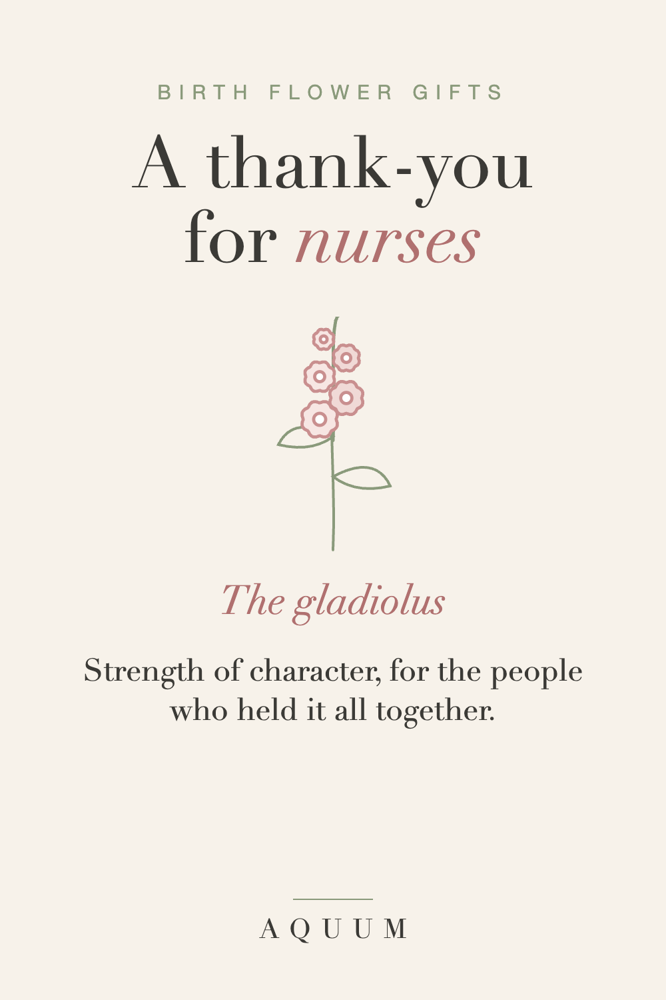

Birth Flower Gifts for Nurses: A Thank-You That Means Something
2026-09-30
This article may contain affiliate links. How that works.

Nurses get a lot of chocolate. It's appreciated, it disappears by the end of the shift, and it says "thanks" without saying for what. A birth flower gift says more: it's about the person, not the job, and it lasts longer than the box.
The nurse's flower: the gladiolus
If you don't know the nurse's birth month, the gladiolus, August's birth flower, is the natural choice. Its name comes from the Latin for "sword," and it has long stood for strength of character and integrity: the quality that gets someone through a double shift and still lets them be kind at the end of it.
If you do know their month, use their own flower. The month-by-month guide has all twelve meanings.
Gifts that survive a twelve-hour shift
- A sturdy mug for the break room, with their flower and a line about what it means. Pick one that's dishwasher safe.
- A tote bag for everything that goes back and forth: lunch, a change of socks, a book they never get to finish.
- A soft shirt for days off, because nobody wants to wear anything stiff after a week of scrubs.
- A handwritten card with the flower's meaning and one specific thing they did. That's the part they'll keep.
For nurses as a group
For a whole unit, skip the individual gifts and bring something shareable, plus one card signed by everyone with the gladiolus and its meaning. If you want to give each person something small, a mug with their own birth flower works at any budget.
When to give it
- Nurses Week runs May 6 to 12 in the US, and it's when most thank-you gifts arrive.
- Christmas and the holidays, when many nurses work while everyone else is home.
- After a long hospital stay, when you finally have a moment to say thank you properly.
Made-to-order gifts take about a week to make and ship, so plan ahead for any of these dates. More ideas for the season are in our Christmas gift guide.